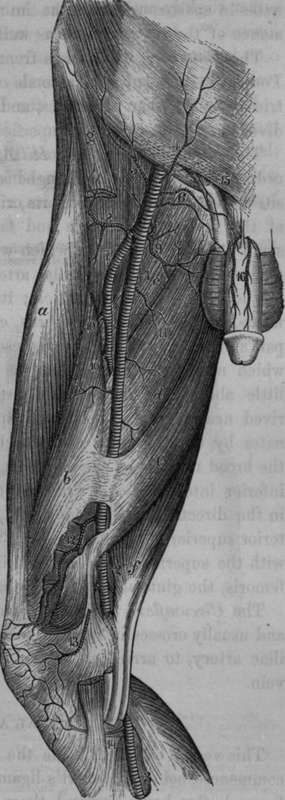
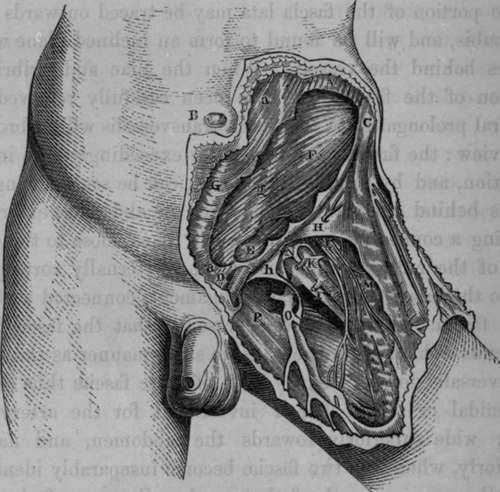

The Femoral Artery
Description
This section is from the book "Anatomy Of The Arteries Of The Human Body", by John Hatch Power. Also available from Amazon: Anatomy of the Arteries of the Human Body, with the Descriptive Anatomy of the Heart.
The Femoral Artery
This vessel, called by some the superficial femoral artery, commences behind Poupart's ligament, and loses the name of femoral after having passed through a tendinous opening in the adductor magnus muscle, when it receives the name of popliteal. Professor Al-cock refers the commencement of the femoral artery to a fixed pointy namely, "the ilio-pecti-neal eminence of the os innominatum," corresponding to a point midway between the spinous process of the ilium and the symphysis pubis.* Its course is nearly parallel to a line drawn from a point a little internal to the centre of Poupart's ligament to the internal margin of the patella. According to Professor Alcock, though for the most part the artery inclines inwards at first, that is, from the os in-nominatum into the inguinal space, yet, "the general direction of it is either slightly outward, or at the most directly downward, not inward."* It is at first on a plane anterior to the femur, but soon becomes internal, and lastly, where it becomes the popliteal artery, it lies posterior to this bone.
Fig. 58. Arteries of the front of the Thigh.
1, Femoral Artery. 2, Popliteal Artery. 3, Posterior Tibial Artery. 4, Superficial Epigastric Artery. 5, Superficial Circumflex Iliac. 6. External Pudics. 7. Profound Femoral Artery. 8, 9. External and Internal Circumflex Arteries. 10, Perforating Arteries. 11, Muscular Branches. 12, Anastomotic Artery. 13, 14, Internal Articular Arteries. 15, Small Branch from the Epigastric. 16, Dorsal Arteries of the Penis, a, Rectus Muscle, 6, Internal Vastus, c, d. e, Adductor Muscles. f, Semitendinous Muscle. g, Sartorius Muscle.
* Todd's Cyclopaedia, p. 236.
In the superior third of the thigh it is covered by the integuments, then by the superficial fascia; and on removing this layer of parts we expose the fascia lata of the thigh, which in this region is arranged in the following divisions or layers, viz., the iliac, cribriform, and pectineal or pubic. The middle or cribriform portion crosses the saphenic opening or anterior inferior termination of the crural canal, and lies anterior to the femoral artery and vein. The external margin of the saphenic opening is formed by the iliac portion of the fascia lata, and presents a lunated appearance, the concavity of which is directed inwards, and unites with the cribriform layer, and in this situation covers a portion of the artery: above this point we may observe the iliac portion of the fascia lata passing upwards and inwards to form Hey's ligament, the commencement of which also lies anterior to the artery; this ligament, as it passes inwards to its insertion, forms also an anterior relation to the femoral vein. The pectineal or pubic portion of the fascia lata may be traced outwards from the pubis, and will be found to form an inclined plane which passes behind the vessels. When the iliac and cribriform portion of the fascia lata have been carefully removed, the femoral prolongation of the fascia transversalis will be brought into view: the fascia transversalis is exceedingly thin in this situation, and by a careful dissection can be seen passing upwards behind Poupart's ligament to the abdomen, externally forming a connection with the fascia iliaca, close to the outer side of the external iliac artery, and internally corresponding to the base of Gimbernaut's ligament, connected with the same fascia. It will be seen presently that the fascia iliaca descends behind the vessels in the same manner as the fascia transversalis does in front. Both of these fasciae thus form a pyramidal or funnel-shaped investment for the artery and vein; wide superiorly towards the abdomen, and narrow inferiorly, where the two fasciae become inseparably identified with the proper sheath of the vessels. Some confusion has arisen from the names given to these prolongations of the fasciae from the abdomen and pelvis. Sir A. Cooper, in speaking of the fascia transversalis and fascia iliaca as related to the femoral artery and vein, says that they form the "crural sheath" or "the sheath in which the crural vessels are contained;" and again, "the sheath is therefore formed like a funnel." If we cautiously remove the fascia transversalis and the fascia iliaca from the vessels, it will be distinctly seen that they have still a well-marked sheath surrounding them, which, as has been already indicated, is a prolongation of the sub-peritoneal layer of tissue which forms a proper sheath for the external iliac artery and vein : it would appear, therefore, that the term sheath of the vessels might be more correctly applied to this latter structure, and the term " funnel" might with equal propriety be confined to the investment formed by fascia transversalis and fascia iliaca. On gently passing the handle of the scalpel downwards between the vessels and the anterior part of funnel, we will remark that the fascia transversalis identifies itself with the sheath of the vessels higher up, that is, nearer to Poupart's ligament, on the front of the artery than on the vein: the connection between the anterior wall of the funnel and the sheath passes obliquely downwards and inwards, and extends as far down along the femoral vein as the entrance of the saphena vein: there is therefore more of the vein than of the artery contained within the funnel.
Fig. 59. The Surgical Anatomy of the Inguinal Region. The Fascia Lata has been partly removed.
A, Muscular part of External Oblique. B. The Umbilicus. C, The Anterior Superior Iliac Spine. D, The Spine of the Pubis. E, The Cremaster. F, The Internal Oblique. G. The Linea Alba. H, The Iliac portion of the Fascia Lata. I. The Femoral Vein. K, The Femoral Artery. L, The Anterior Crural Nerve. M, The Sartorius Muscle. N, The Anterior wall of the Funnel partially dissected away from the vessels. The Septum formed by the sheath and dipping in between the artery and vein, attaching itself anteriorly to the anterior wall of the Funnel, and posteriorly to the posterior wall, is here exhibited. O, The Saphena Vein. P. The Pubic portion of the Fascia Lata, a, a, The tendon of the External Oblique, g, The Linea Semilunaris, h, Hey s Ligament.
* Todd's Cyclopaedia, p. 236.
Continue to: